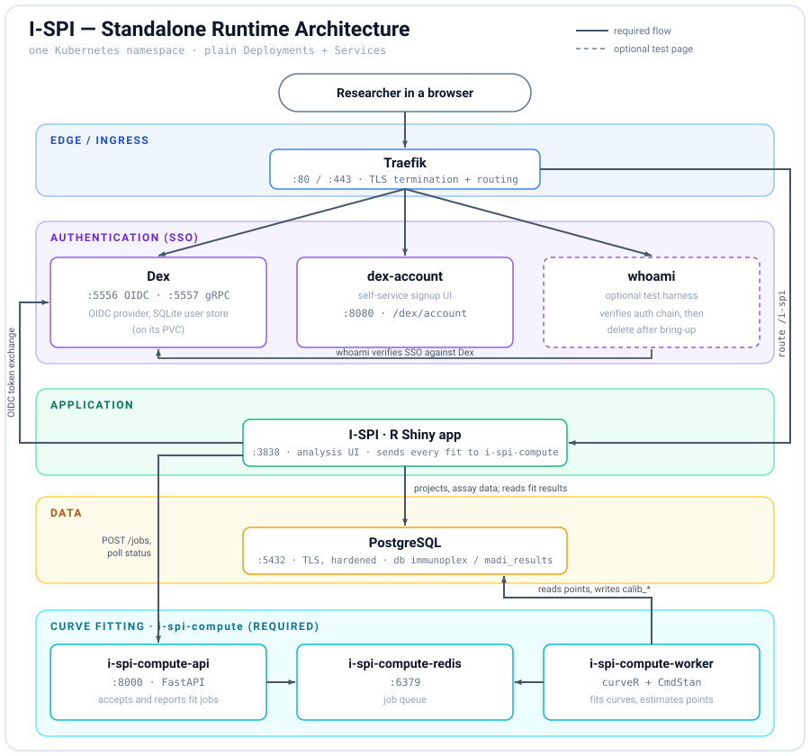
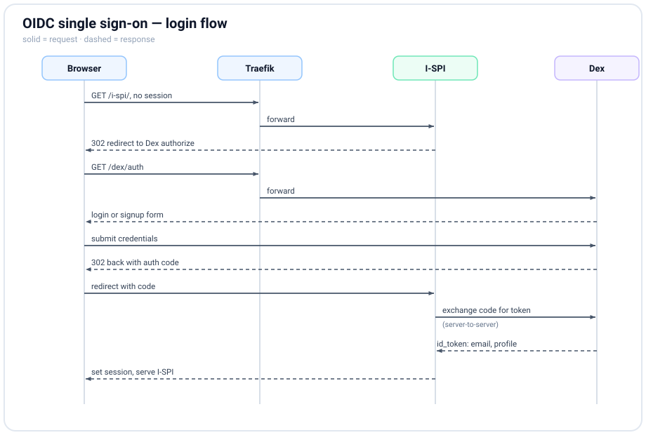
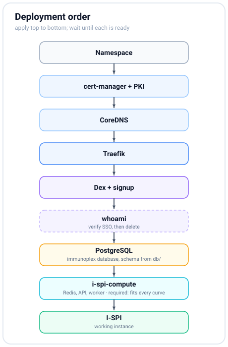

This site describes how to run I-SPI with everything it needs. I-SPI is an R Shiny application for immunoassay data: bead arrays, ELISA and flow cytometry, with support for MSD planned. It does not fit standard curves itself: it sends each fit to i-spi-compute, which runs the curveR packages and writes the results to the database. I-SPI then reads them back.
I-SPI submits a job → API → Redis queue → worker (curveR) →
calib_* tables → I-SPI reads.
So i-spi-compute is required, and its worker, not I-SPI, is the component that needs CPU and memory.
Which guide
| You want to | Read |
|---|---|
| Try I-SPI, test a release or develop, on one machine with Docker | On one machine |
| Run a lasting instance on a server you control | On your own cluster |
| Run it with a cloud provider, including in an EU region | In the cloud |
| Install on a host without internet access | Without internet access |
| Look up a variable, placeholder or Secret | Configuration and secrets |
| See what the database contains | Database schema |
| Move to a new release | Upgrading and rolling back |
What you deploy
Everything runs in one Kubernetes namespace, immunoplex,
as plain Deployments and Services. There is no operator and no Helm
chart: the manifests in k8s-manifests/
are applied with kubectl.

| Component | Image | Port | Keeps data | Role |
|---|---|---|---|---|
| Traefik | traefik:v3.5.4 |
80, 443 | no | entry point, TLS, routing by path |
| Dex | dexidp/dex:v2.44.0-alpine |
5556, 5557 | yes (1 GB volume) | sign-in (OpenID Connect) |
| dex-account |
ghcr.io/immunoplex/signup, pinned by digest |
8080 | no | self-service signup page |
| PostgreSQL | postgres:17.2 |
5432 | yes (20 GB volume) | the immunoplex database |
| I-SPI | ghcr.io/immunoplex/i-spi:1.1.1 |
3838 | no | the application |
| i-spi-compute API | ghcr.io/immunoplex/i-spi-compute-api:1.1.1 |
8000 | no | accepts and reports fit jobs |
| i-spi-compute Redis | redis:7.4 |
6379 | no | the job queue |
| i-spi-compute worker | ghcr.io/immunoplex/i-spi-compute-worker:1.1.1 |
none | no | runs the fits, writes calib_*
|
| whoami (optional) |
traefik/whoami, oauth2-proxy:v7.8.1
|
80, 8080 | no | test page that shows the signed-in user |
The worker image contains curveRcore 0.7.0, curveRfreq 0.5.2, curveRbayes 0.5.2, curveRweights 0.3.0 and CmdStan 2.40.0.
Choices to make first
Where it runs. The manifests run on any Kubernetes
cluster that has a default StorageClass for ReadWriteOnce
volumes and can expose a LoadBalancer Service. Without a
cluster, the cluster guide installs
single-node K3s. For a single machine without Kubernetes, use the Docker Compose stack.
Hostname. One hostname is used everywhere: the Ingresses, the sign-in issuer and every redirect URI. Choose the name users will type in the browser. A mismatch is the most common cause of a failed sign-in.
TLS. By default cert-manager runs a private certificate authority, and browsers trust the site only after you import its root certificate. For certificates browsers already trust, use an ACME (for example Let’s Encrypt) or your own issuer; see In the cloud.
Internet access. Images are pulled from public registries. Without access, stage them first: Without internet access.
Size. Give the i-spi-compute worker the CPU and memory. I-SPI, the API and Redis are light. A single node with 4 CPUs and 16 GB is enough to bring the system up; a node that will fit real studies wants 8 CPUs or more and 16 to 32 GB. Production runs the worker with 16 CPUs and 16 GB.
How the pieces connect
Traefik is the only component exposed outside the
cluster. It terminates TLS and routes by path: /i-spi to
I-SPI, /dex to Dex, /dex/account to the signup
page. It watches only the immunoplex namespace. Its
middlewares strip the path prefix before a request reaches the
application, add the trailing slash Shiny needs, and redirect HTTP to
HTTPS.
Dex signs users in. It stores accounts in SQLite on
its volume, so no external identity provider is needed, and it has one
client, I-SPI. The browser reaches Dex at the public
https://<host>/dex; I-SPI’s server exchanges the
sign-in code for a token at Dex’s in-cluster address,
http://dex:5556/dex.

PostgreSQL holds everything durable: projects and
users, imported assay data, settings, and the fit results. Its init
script turns on TLS and rejects any connection without it; I-SPI and the
worker always connect with TLS. The schema comes from db/.
I-SPI connects to the database and to Dex, and sends
each fit to the compute API’s in-cluster address,
http://i-spi-compute-api:8000, with the API key from the
i-spi-compute Secret. It polls the job, then reads the
results. It keeps no state of its own.
i-spi-compute. The API accepts jobs and puts them on
the Redis queue. The worker takes jobs from the queue, reads the points
to fit from the database’s *_for_fit views, fits the
standard curves, estimates samples, controls and standards, and writes
the calib_* tables. A second, independent compute tier can
be added; see Compute tiers.
Order of deployment
Each component starts after the ones it depends on. A pod that starts too early restarts until its dependency answers.

- The namespace, cert-manager with a certificate issuer, and on K3s the CoreDNS entry for the hostname.
- Traefik.
- Dex.
- Optionally whoami, to test sign-in before anything else.
- PostgreSQL, then the
immunoplexdatabase and its schema. - i-spi-compute.
- I-SPI.
The cluster guide gives the commands.
Running it
Backups. Back up the immunoplex
database (pg_dump) and, to keep user accounts, Dex’s
volume. The Redis queue holds only jobs in flight.
More fitting capacity. Raise the worker’s CPU and
memory, keeping WORKER_CORES equal to its CPU limit, or run
more worker replicas; all replicas take jobs from the same queue. More
I-SPI replicas serve more simultaneous users. PostgreSQL, Dex, Redis and
the API run as single instances.
Upgrades. Images are pinned to release tags. See Upgrading and rolling back.